|
|
|
Солнечное Мамайское Баунти
(27, 28 мая 2006) 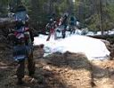 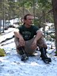 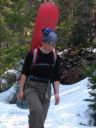 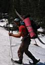 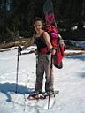 Снега на тропе мало, только последнюю треть пути немного помесили кашу в свое удовольствие. Клеща одного на тропе поймали, маленького. Погода в субботу выдалась солнечная, Мамай шумит и бурлит, вдоль тропы проклевывается из под снега молодая флора, зеленые ковры молодой черемши. Вокруг кунга разноцветные ковры мусора. На выносе декабрьской мега-лавины оттаяли и лежат макушками в сторону реки зеленые елочки, торчат пеньки на месте красивой рощицы. Куда грин-пис смотрит :) ? Зато в следующем сезоне можно будет лихо выкатывать из цирка до прямо до кунга. 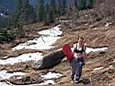 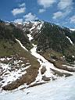 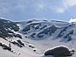 Ребята пошли строить трамплин, а я дошел до Учебки и скатился по забитому плотным снегом кулуару. Аки трасса! Только вот камни, ветки и грязь попадаются.
Потом катались, загорали, прыгали. Баунти полное. Вова видеокамеру брал, запечатлелись. Чего-то мне на месте не сиделось, на трамплине не прыгалось, пошел кататься. 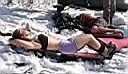 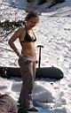 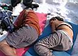 Вот так и покатались еще немного, проголодались, решили на завтра в цирк сходить. А в зимухе нас ждала большая и толстая МЫША!, которая ништяки захавала :) Вот в воскресенье с утра было пасмурно и временами с неба что-то падало похожее на снег, но только в жидком виде. Было принято решение не ломиться в туманный цирк, а отсыпаться после вчерашнего затянувшегося ужина с самогоном и гитарой. Назад даже немного выкатили, но в основном грязь месили. Нашли на тропе пару оттаявших двухлитровок пиффка, которое неплохо перезимовало и было распито в электричке. В электричке было здорово - в Мурино подсела разношерстая компания туристов-водников-велосипедистов, Леха взял у них гитару и всех порадовал веселыми песнями :) PS: жалко на Лесной пупырь не успели сходить этой весной, снега там много оставалось на северном склоне... Май, ноябрь 2006. Белокрылов А.Ю. Слюдянка. |
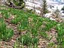 |